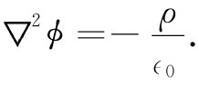

由于B是由电流确定的，所以A也如此。我们现在要由电流来求A。从基本方程式（14.2）出发：
对于静电学一样。
如果我们应用矢量恒等式（2.58），将▽×（▽×A）改写成：
▽×（▽×A）=▽（▽·A）-▽2 A， （14.14）
则关于矢势的式（14.12）看来就更像关于ϕ的式子。由于我们已决定使▽·A=0（而现在就会看出个所以然来了），所以式（14.12）变成
（14.15）
当然，这个矢量方程包括下列三个方程：
而这三个方程中的每一个在数学上 均与下列方程全同 ：
 （14.17）
所有以前曾学习过的由已知ρ解出势的方法，都可用来由已知j解出A的每一个分量！
在第4章中，我们已经知道，静电学方程式（14.17）的一个通解为
因而我们就立即知道，关于Ax 的通解为
Ay 和Az 与此相仿（图14-2将使你们想起关于r12 和dV2 的习惯表示）。我们可以将这三个解合并在一个矢量式中
如果你乐意，还可直接对各分量取微分而证实：关于A的这一积分满足▽·A=0，只要▽·j=0，而我们早已知道对于恒定电流来说这是理所当然的。
图14-2 点1处的矢势A是对所有点2处的电流元jdV积分而得出的
这样，我们就得到关于求出恒定电流的磁场的普遍方法。原则是：从一电流密度j所产生的矢势的x分量与从一等于jx /c2 的电荷密度ρ所该产生的电势ϕ相同——而y和z分量也与此相仿（这一原则只对在固定方向上的分量才适用。例如，A的“径向”分量不能用同样的办法从j的“径向”分量算出来）。因此，从电流密度矢量j，便可以应用式（14.19）求出A——即通过求解电荷分布为ρ1 =jx/c2 ，ρ2 =jy /c2 和ρ3 =jz /c2 的三个想象中的静电学问题，从而求得A的每一分量。然后，又可通过A的各种微商算出▽×A，最后获得B。这比静电学稍微复杂一些，但想法是相同的。现在，我们将通过在几种特殊情况下矢势的求解例子来说明这一理论。